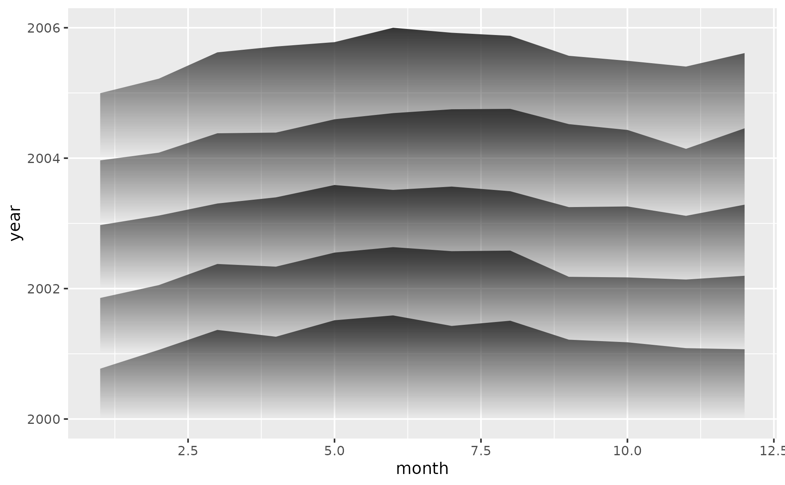
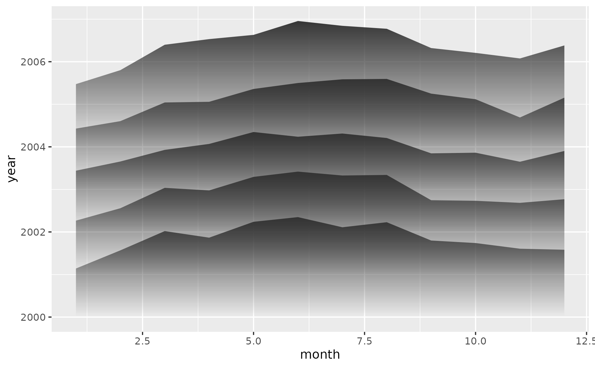
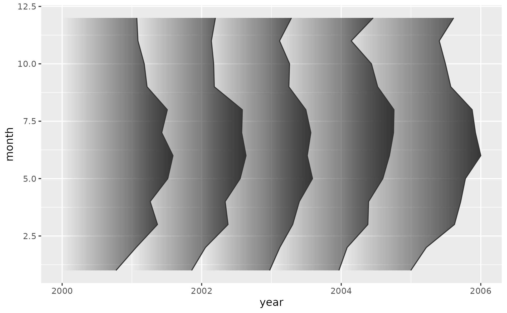
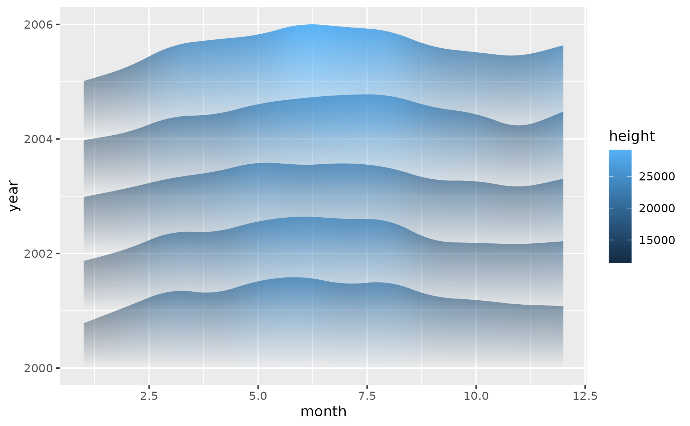
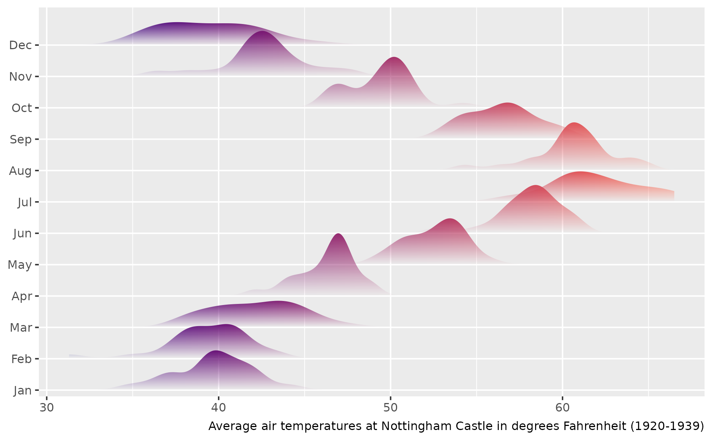
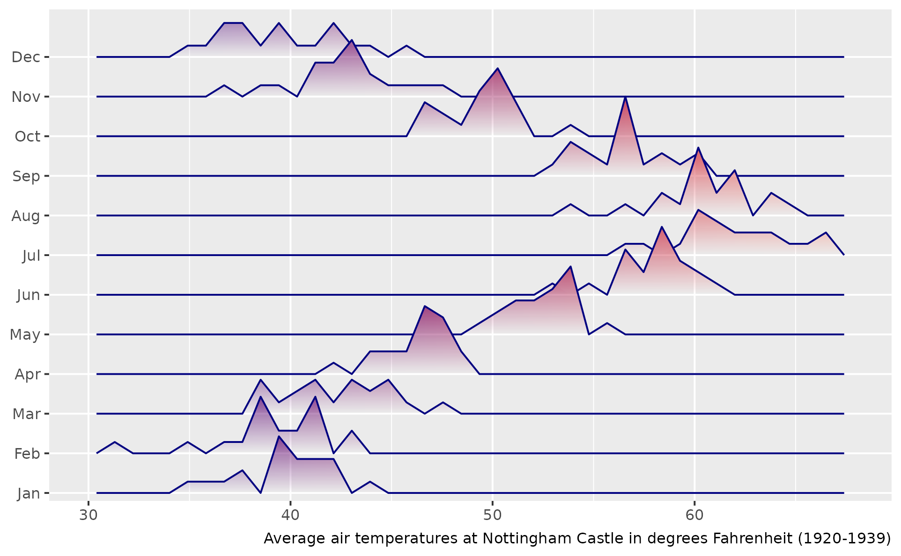
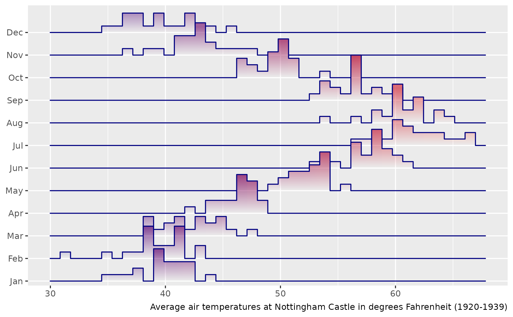

Ridgeline Plots with Fading Gradient
Source:R/geom-ridgeline-fade.R, R/geom-ridgeline-density-fade.R, R/geom-ridgeline-freqpoly-fade.R, and 1 more
geom_ridgeline_fade.Rdgeom_ridgeline_fade() draws ridgeline plots: multiple area shapes
stacked at different vertical offsets and adds a vertical alpha gradient that
fades from opaque at the peaks to transparent at each ridge's baseline.
The gradient machinery is shared with geom_area_fade(); the difference is
that each group's baseline is its own y value rather than zero, enabling
the characteristic overlapping-ridges layout.
geom_ridgeline_density_fade() is a convenience wrapper around
geom_ridgeline_fade() that uses ggplot2::stat_density() to compute a
kernel density estimate, mapping the result to height automatically via
aes(height = after_stat(density)). Adjust scale manually so adjacent
ridges reach the desired overlap.
geom_ridgeline_freqpoly_fade() and geom_ridgeline_histogram_fade()
are the ridgeline counterparts of geom_freqpoly_fade() and
geom_histogram_fade(). Both bin the x aesthetic per categorical
y baseline; they differ only in how consecutive bins connect:
freqpoly draws linear connections between bin midpoints (polyline);
histogram draws stepped flat-top rectangles with vertical jumps at
the bin edges.
Usage
geom_ridgeline_fade(
mapping = NULL,
data = NULL,
stat = "identity",
position = NULL,
...,
alpha_fade_to = 0,
alpha_scope = "group",
scale = NULL,
min_height = NULL,
na.rm = FALSE,
orientation = NA,
show.legend = NA,
inherit.aes = TRUE
)
geom_ridgeline_density_fade(
mapping = NULL,
data = NULL,
stat = "density",
...,
alpha_fade_to = 0,
alpha_scope = "group",
scale = NULL,
min_height = NULL,
na.rm = FALSE,
orientation = NA,
show.legend = NA,
inherit.aes = TRUE
)
geom_ridgeline_freqpoly_fade(
mapping = NULL,
data = NULL,
position = NULL,
...,
bins = 30,
binwidth = NULL,
center = NULL,
boundary = NULL,
closed = c("right", "left"),
pad = TRUE,
alpha_fade_to = 0,
alpha_scope = "group",
scale = NULL,
min_height = NULL,
na.rm = FALSE,
orientation = NA,
show.legend = NA,
inherit.aes = TRUE
)
geom_ridgeline_histogram_fade(
mapping = NULL,
data = NULL,
position = NULL,
...,
bins = 30,
binwidth = NULL,
center = NULL,
boundary = NULL,
closed = c("right", "left"),
pad = TRUE,
alpha_fade_to = 0,
alpha_scope = "group",
scale = NULL,
min_height = NULL,
na.rm = FALSE,
orientation = NA,
show.legend = NA,
inherit.aes = TRUE
)Arguments
- mapping
Set of aesthetic mappings created by
aes(). If specified andinherit.aes = TRUE(the default), it is combined with the default mapping at the top level of the plot. You must supplymappingif there is no plot mapping.- data
The data to be displayed in this layer. There are three options:
If
NULL, the default, the data is inherited from the plot data as specified in the call toggplot().A
data.frame, or other object, will override the plot data. All objects will be fortified to produce a data frame. Seefortify()for which variables will be created.A
functionwill be called with a single argument, the plot data. The return value must be adata.frame, and will be used as the layer data. Afunctioncan be created from aformula(e.g.~ head(.x, 10)).- stat
The statistical transformation to use on the data for this layer. When using a
geom_*()function to construct a layer, thestatargument can be used to override the default coupling between geoms and stats. Thestatargument accepts the following:A
Statggproto subclass, for exampleStatCount.A string naming the stat. To give the stat as a string, strip the function name of the
stat_prefix. For example, to usestat_count(), give the stat as"count".For more information and other ways to specify the stat, see the layer stat documentation.
- position
A position adjustment to use on the data for this layer. This can be used in various ways, including to prevent overplotting and improving the display. The
positionargument accepts the following:The result of calling a position function, such as
position_jitter(). This method allows for passing extra arguments to the position.A string naming the position adjustment. To give the position as a string, strip the function name of the
position_prefix. For example, to useposition_jitter(), give the position as"jitter".For more information and other ways to specify the position, see the layer position documentation.
- ...
Additional arguments passed to
geom_ridgeline_fade(), including smoothing parameters (bw,adjust,kernel,n,trim,bounds) forwarded toggplot2::stat_density().- alpha_fade_to
A single finite number between 0 and 1. The alpha value at the baseline of each ridge. Defaults to
0(fully transparent).- alpha_scope
How to scale alpha across ridges. Vocabulary aligned with
geom_area_fade():"group"(default): every ridge independently uses the full alpha range fromalpha_fade_toto full opacity. Each ridge is its own reference."global": alpha is scaled relative to the tallest ridge in the entire layer, including across facet panels. Shorter ridges fade in proportion.
- scale
Height multiplier applied to
height. The defaultNULLauto-scales the layer so the tallest ridge overlaps its neighbour by ~50% (to2 / max(abs(height))). The auto-resolved value is reported viacli::cli_inform()so you have a starting point if you want to override.- min_height
Minimum
heightvalue to draw. Points withheight < min_heightare dropped, creating gaps in the ridgeline. Defaults to0.- na.rm
If
FALSE, the default, missing values are removed with a warning. IfTRUE, missing values are silently removed.- orientation
The orientation of the layer. The default (
NA) automatically determines the orientation from the aesthetic mapping. In the rare event that this fails it can be given explicitly by settingorientationto either"x"or"y". See the Orientation section for more detail.- show.legend
logical. Should this layer be included in the legends?
NA, the default, includes if any aesthetics are mapped.FALSEnever includes, andTRUEalways includes. It can also be a named logical vector to finely select the aesthetics to display. To include legend keys for all levels, even when no data exists, useTRUE. IfNA, all levels are shown in legend, but unobserved levels are omitted.- inherit.aes
If
FALSE, overrides the default aesthetics, rather than combining with them. This is most useful for helper functions that define both data and aesthetics and shouldn't inherit behaviour from the default plot specification, e.g.annotation_borders().- bins
Number of bins. Overridden by
binwidth. Defaults to 30. Forwarded toggplot2::stat_bin().- binwidth
Width of each bin in data units. When supplied, takes precedence over
bins. Forwarded toggplot2::stat_bin().- center, boundary, closed, pad
Forwarded to
ggplot2::stat_bin().pad = TRUE(the default for ridgeline forms) prepends/appends a zero-count bin at each end so the ribbon touches the baseline cleanly.
Value
A ggplot2::layer() object that can be added to a ggplot2::ggplot().
Coordinate systems
geom_ridgeline_fade() only supports linear gradients. When used with
ggplot2::coord_polar() or ggplot2::coord_radial(), the geom falls back
to standard ridgeline rendering (equivalent to ggplot2::geom_ribbon()),
which means no gradient fill is added. The geom emits a warning in this
case.
Legend key order
Ridges are rendered back-to-front: the ridge with the highest y-baseline
is drawn first (furthest back) and the ridge with the lowest y-baseline
is drawn last (on top). When fill tracks y, the default fill legend
lists levels in ascending order – placing the lowest y at the top of the
legend – which is the reverse of the spatial top-to-bottom reading order
(highest y at top of chart, lowest y at bottom).
To align the legend with the chart, reverse the legend keys:
+ guides(fill = guide_legend(reverse = TRUE))alpha_scope = "global" under faceting
alpha_scope = "global" ties opacity to absolute height across the whole
layer, so two ridges / areas / bars of equal height render at equal
alpha regardless of which panel they're in. This is meaningful only when
panels share a common y scale. Under
facet_wrap(scales = "free_y") (or facet_grid(rows = ..., scales = "free"))
each panel rescales y independently, so the visual height of a shape no
longer reflects its data height; the alpha encoding then conflicts with
what the eye reads from the panel size. For comparable alpha across
free-y panels you have two options: stick to the default scales = "fixed",
or accept that under free scales alpha_scope = "group" is the more
honest choice (each shape independently uses its own alpha range).
Legend key under coord_flip
The legend key glyph always shows the canonical (data-axis) fade
direction – vertical for the default orientation, horizontal under
orientation = "y". Under ggplot2::coord_flip() the rendered geom
rotates correctly but the legend key does not: ggplot2's legend
builder is coord-independent by design (draw_key has no access to
the coord). For a legend key that matches a horizontal layout, prefer
aes(y = ...) with auto-detected orientation = "y" over
aes(x = ...) + coord_flip().
References
Murrell, P. (2021). "Luminance Masks in R Graphics." Technical Report 2021-04, Department of Statistics, The University of Auckland. Version 1. https://www.stat.auckland.ac.nz/~paul/Reports/GraphicsEngine/masks/masks.html
Murrell, P. (2022). "Vectorised Pattern Fills in R Graphics." Technical Report 2022-01, Department of Statistics, The University of Auckland. Version 1. https://www.stat.auckland.ac.nz/~paul/Reports/GraphicsEngine/vecpat/vecpat.html
Murrell, P., Pedersen, T. L., and Skintzos, P. (2023). "Porter-Duff Compositing Operators in R Graphics." Department of Statistics, The University of Auckland. Version 1. https://www.stat.auckland.ac.nz/~paul/Reports/GraphicsEngine/compositing/compositing.html
Murrell, P. (2023). "Groups, Compositing Operators, and Affine Transformations in R Graphics." Technical Report 2021-02, Department of Statistics, The University of Auckland. Version 3. https://www.stat.auckland.ac.nz/~paul/Reports/GraphicsEngine/groups/groups.html
See also
geom_ridgeline_density_fade() for the convenience density-ridgeline
wrapper, geom_area_fade() for area plots with the same gradient effect.
geom_ridgeline_fade() for the lower-level geom. This wrapper
mirrors the design of
ggridges::geom_density_ridges()
from the ggridges package
by Claus O. Wilke, which is the full-featured original; ggpointless
adds the alpha-gradient rendering layer.
Aesthetics
geom_ridgeline_fade() understands the following aesthetics. Required aesthetics are displayed in bold and defaults are displayed for optional aesthetics:
| • | x | |
| • | y | |
| • | height | |
| • | alpha | → NA |
| • | colour | → via theme() |
| • | fill | → via theme() |
| • | group | → inferred |
| • | linetype | → via theme() |
| • | linewidth | → via theme() |
Learn more about setting these aesthetics in vignette("ggplot2-specs").
Examples
library(ggplot2)
totals <- aggregate(
sales ~ year + month,
data = subset(txhousing, year <= 2004),
FUN = sum,
na.rm = TRUE
)
p <- ggplot(totals, aes(x = month, y = year, group = year, height = sales))
p + geom_ridgeline_fade(outline.type = "none")
#> ℹ Using auto-computed `scale = 0.000068`.
#> • Pass an explicit `scale` to override.

# increase overlap using the scale parameter
p + geom_ridgeline_fade(outline.type = "none", scale = 0.0001)

# flip orientation
p + aes(y = month, x = year) +
geom_ridgeline_fade()
#> ℹ Using auto-computed `scale = 0.000068`.
#> • Pass an explicit `scale` to override.

# Map a variable to `fill` to get a 2D gradient
# and use stat_chaikin to smooth curves
p +
geom_ridgeline_fade(
aes(fill = after_stat(height)),
alpha_scope = "global",
outline.type = "none",
stat = "chaikin"
)
#> ℹ Using auto-computed `scale = 0.000069`.
#> • Pass an explicit `scale` to override.

# Average monthly temperatures at Nottingham, 1920-1939
dmn <- list(
month.abb,
time(datasets::nottem) |> floor() |> unique()
)
df_nottem <- datasets::nottem |>
matrix(data = _, 12, dimnames = dmn) |>
as.data.frame() |>
stack() |>
cbind(month = factor(month.abb, levels = month.abb))
# Shared base plot reused by the three ridgeline variants below
p <- ggplot(df_nottem, aes(x = values, y = month)) +
labs(
x = NULL,
y = NULL,
caption = "Average air temperatures at Nottingham Castle in degrees Fahrenheit (1920-1939)"
) +
scale_fill_gradient(low = "navy", high = "tomato", guide = "none") +
scale_y_discrete(expand = expansion(add = c(0.2, 1.2)))
# Density ridgelines -- convenience wrapper for the stat = "density"
p +
geom_ridgeline_density_fade(
aes(fill = after_stat(x)),
outline.type = "none"
)
#> ℹ Using auto-computed `scale = 6.5`.
#> • Pass an explicit `scale` to override.

# freqpoly uses stat = "bin"
p +
geom_ridgeline_freqpoly_fade(
aes(fill = after_stat(x)),
alpha_scope = "global",
bins = 40
)
#> ℹ Using auto-computed `scale = 0.29`.
#> • Pass an explicit `scale` to override.

# ridgeline histogram uses stat = "bin" too
p +
geom_ridgeline_histogram_fade(
aes(fill = after_stat(x)),
alpha_scope = "global",
bins = 40
)
#> ℹ Using auto-computed `scale = 0.29`.
#> • Pass an explicit `scale` to override.
